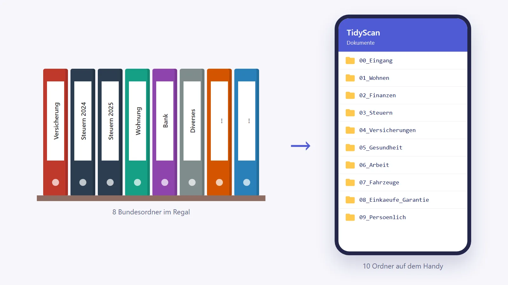

Papierloses Büro zuhause: in 5 Schritten zur digitalen Ablage
Aktualisiert am 18. November 2026 · Silvan, Gründer von TidyScan · 6 Min. Lesezeit
Ein papierloses Büro zuhause heisst nicht, dass nie mehr ein Blatt Papier ins Haus kommt. Es heisst, dass Papier nicht liegen bleibt: Was kommt, wird gescannt, sinnvoll benannt, abgelegt, und das Original landet im Schredder oder in einem einzigen Ordner für die wenigen Dinge, die man im Original behält. Dafür brauchst du keinen Dokumentenscanner und keine teure Software. Ein Handy, ein Speicherort und eine Routine reichen. Hier sind die fünf Schritte.

Schritt 1: Einen Speicherort wählen
Alles kommt an einen Ort. Welcher, ist weniger wichtig als die Entscheidung selbst:
- Cloud-Speicher wie Google Drive, OneDrive, Dropbox oder iCloud: überall verfügbar, mit eingebauter Suche.
- Speicher zuhause (NAS): Die Daten bleiben bei dir, um Updates kümmerst du dich selbst.
- Nur das Handy: einfach, aber riskant ohne Backup.
Wichtig ist bei jeder Variante ein Backup an einem zweiten Ort. Ein papierloses Büro ohne Backup ist gefährlicher als ein Papierordner. Wer sich zwischen Cloud und eigener Lösung nicht entscheiden kann, findet Argumente im Ratgeber Dokumente scannen ohne Cloud.
Schritt 2: Ordner anlegen
Zehn Hauptordner nach Lebensbereich, höchstens zwei Ebenen, ein Eingangsordner für Unklares. Eine fertige Vorlage zum Herunterladen findest du im Ratgeber Ordnerstruktur mit Vorlage. Das dauert zehn Minuten und ist eine der wichtigsten Entscheidungen für deine papierlose Ablage.
In Stein gemeisselt ist sie trotzdem nicht. Die Struktur darf mitwachsen: Sammelt sich im Eingangsordner viel zum selben Thema, bekommt es einen eigenen Ordner.
Schritt 3: Ein Namensschema festlegen
JJJJMMTT_Absender_Art.pdf, zum Beispiel 20261118_Swisscom_Rechnung.pdf. Mit dem Datum zuerst sortiert sich jeder Ordner von selbst, mit dem Absender findest du alles über die Suche. Regeln und Beispiele stehen im Ratgeber Dokumente richtig benennen.
Schritt 4: Eine Routine für die Post
Hier entscheidet sich, ob das papierlose Büro nach drei Monaten noch funktioniert. Zwei Varianten haben sich bewährt:
- Sofort: Brief öffnen, scannen, ablegen, Papier weg. Das dauert mit einer Scan-App unter einer Minute. Das Handy ist ohnehin immer dabei, und was erledigt ist, belastet den Kopf nicht mehr.
- Einmal pro Woche: Alle Post in eine Ablageschale, am festen Tag alles auf einmal scannen.
Dasselbe gilt für Rechnungen per E-Mail: Sie gehören in dieselbe Ablage, nicht ins Postfach. Wie das geht, steht im Ratgeber Rechnungen scannen.
Was im Original bleibt: Testamente, Vorsorgeaufträge, Patientenverfügungen, Zeugnisse, Prüfungsnachweise sowie Berufs- und andere Abschlüsse würde der Beobachter immer im Original behalten. Ich ergänze: unterschriebene Verträge, solange sie laufen. Alles andere, also Quittungen, Monatsrechnungen, Kontoauszüge und Abo-Verträge, genügt digital.
Papier mit Namen, Adresse oder Kontonummern gehört in den Schredder, nicht ganz ins Altpapier.
TidyScan erscheint in Kürze bei Google Play.
Schritt 5: Den Altbestand angehen, aber nicht auf einmal
Der häufigste Fehler: am ersten Wochenende zehn Bundesordner scannen wollen. Das dauert ewig, und am Montag kommt neue Post.
Besser:
- Ab heute alles Neue nach Schritt 4.
- Altbestand rückwärts: zuerst das laufende Jahr, dann das Vorjahr. Ältere Jahre nur, wenn du sie wirklich noch brauchst.
- Aussortieren vor dem Scannen: Was du nicht mehr brauchst, musst du auch nicht scannen. Wie lange sich Rechnungen aufzubewahren lohnt, steht im Ratgeber Rechnungen scannen.
- Pro Woche ein Ordner: Nach zwei, drei Monaten ist der Schrank leer.
Welche Werkzeuge braucht ein papierloses Büro?
| Werkzeug | Wofür | Muss es sein? |
|---|---|---|
| Handy mit Scan-App | Scannen, benennen, ablegen | ja |
| Speicherort mit Backup | Ablage | ja |
| Schredder | Papier mit Personendaten | empfohlen |
| Ablageschale | Post bis zum Scan-Tag | bei Wochen-Routine |
| Dokumentenscanner | grosse Mengen Altbestand | nein |
Mit TidyScan fallen die Schritte 3 und 4 zusammen: Die App scannt, schlägt den Namen nach Schema vor und legt das Dokument in den passenden Ordner, auch PDFs aus E-Mails. So lässt sich das Büro digitalisieren, ohne dass jeder Brief eine Viertelstunde kostet.
Mein papierloses Büro: sofort statt Stapel
Ich erledige eigentlich alles sofort: Briefe scanne ich, sobald ich sie geöffnet habe, und Rechnungen per E-Mail lege ich direkt ab. Bleibt doch einmal etwas liegen, kommt es in meine Freitags-Routine, zusammen mit den eBill-Rechnungen. Beim Altbestand habe ich nur das Wichtigste nachgescannt.
Fazit: papierlos ist eine Routine, kein Projekt
Ein papierloses Büro zuhause entsteht nicht an einem Wochenende, sondern mit jedem Brief, der nicht mehr liegen bleibt. Ein Speicherort mit Backup, zehn Ordner, ein Namensschema und eine feste Routine reichen. Den Altbestand arbeitest du in Ruhe ab. Alle Funktionen von TidyScan findest du auf der Startseite.
Quellen
- Beobachter: So sorgen Sie papierlos für Ordnung (abgerufen am 18.11.2026)
- BDO: Aufbewahrungspflichten von Privatpersonen in der Schweiz (1.4.2021)
Häufige Fragen
Brauche ich für ein papierloses Büro einen Dokumentenscanner?
Nein. Für die laufende Post reicht das Handy. Ein Dokumentenscanner lohnt sich höchstens, wenn du einen grossen Altbestand auf einmal digitalisieren willst.
Was muss ich im Original aufbewahren?
Testamente, Vorsorgeaufträge, Patientenverfügungen, Zeugnisse, Prüfungsnachweise und Abschlüsse rät der Beobachter immer im Original zu behalten. Dazu kommen unterschriebene Verträge, solange sie laufen.
Ist eine Cloud für die papierlose Ablage sicher genug?
Gängige Cloud-Speicher schützen deine Dateien gut, wenn du ein starkes Passwort und die Zwei-Faktor-Anmeldung nutzt. Wer keine Cloud will, legt lokal ab und macht regelmässig ein Backup.
Wie lange dauert der Umstieg?
Die Einrichtung dauert eine halbe Stunde. Die laufende Post ist ab dem ersten Tag papierlos, der Altbestand braucht je nach Menge einige Wochen bis Monate.